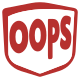
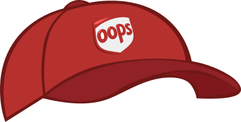
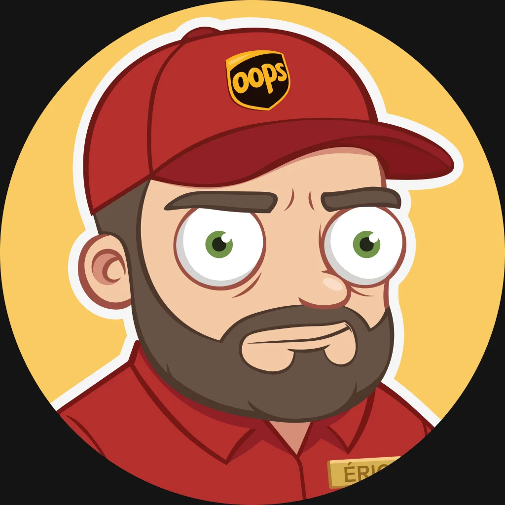

Heureux de vous revoir, variable
OOPS Livraison vous accompagne à chaque étape de votre transport
Programmer un nouvel envoiEn service aujourd’hui :

Vos suivis
Nos livreurs travaillent actuellement pour livrer vos messages dans les meilleurs délais
Comment ça marche ?
Trois étapes, un facteur, et beaucoup de suspense
-
Choisissez votre facteur
Rapide, lent, bavard ou distrait : chaque facteur a sa durée de livraison et ses petites manies.
-
Écrivez votre message
Comme sur n’importe quelle messagerie… sauf qu’il ne partira pas tout de suite.
-
Suivez la livraison
Suivez votre facteur en direct jusqu’à la boîte aux lettres… et découvrez ce qu’il reste de votre message.
Nos livreurs (expérimentés)
Nos livreurs sont triés sur le volet pour vous offrir la meilleure des expériences
Qui sommes-nous ?
OOPS Livraison est née d’une idée simple : et si vos messages instantanés prenaient enfin le temps d’arriver ?
Plutôt que d’envoyer vos messages en une fraction de seconde, nous les confions à de vrais (faux) facteurs. Chacun a son caractère, sa vitesse et ses petites manies : l’un réécrit vos phrases, l’autre perd des mots en chemin, une autre y glisse ses anecdotes…
Notre mission : redonner du suspense et de la bonne humeur à vos conversations.
- 7 facteurs au caractère bien trempé
- 100 % des messages livrés (un jour)
- 0 message intact chez Lisa

Questions fréquentes
Tout ce que vous avez toujours voulu savoir sur nos facteurs (sans jamais oser demander)
Pourquoi mon message est-il arrivé avec des mots en moins ?
Vous l’avez sûrement confié à Lisa. Elle est rapide, très rapide… un peu trop. Pour un message intact, préférez Jérôme (si vous avez 24 h devant vous).
Est-ce que Bob va vraiment livrer mon message ?
Oui. Probablement. Un jour.
Puis-je changer de facteur après l’envoi ?
Non : une fois parti, votre message reste entre les mains du facteur choisi. Vous pourrez en choisir un autre pour le suivant.
Peter a collé sa photo sur la mienne, c’est normal ?
Oui, c’est sa spécialité. Peter ne livre que des photos et ne résiste jamais à l’envie d’y ajouter la sienne.
Les facteurs lisent-ils mes messages ?
Certains plus que d’autres : Eric y glisse quelques mots, Gwendoline y ajoute ses anecdotes. Jérôme et Bob livrent votre texte tel quel.
Prêt à envoyer votre prochain message ?
Choisissez votre facteur, écrivez, et laissez la magie (ou le chaos) opérer.
Programmer un nouvel envoi Choisir mon facteur